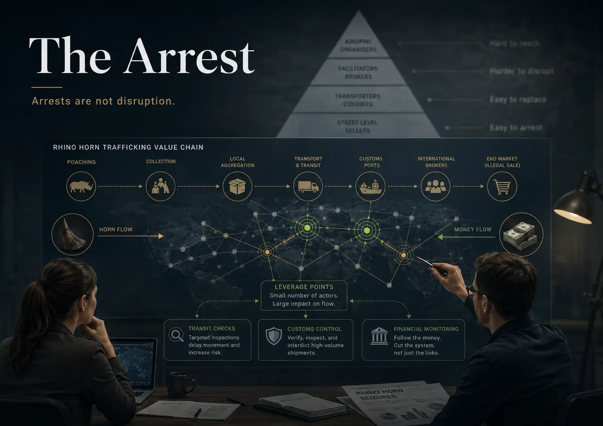
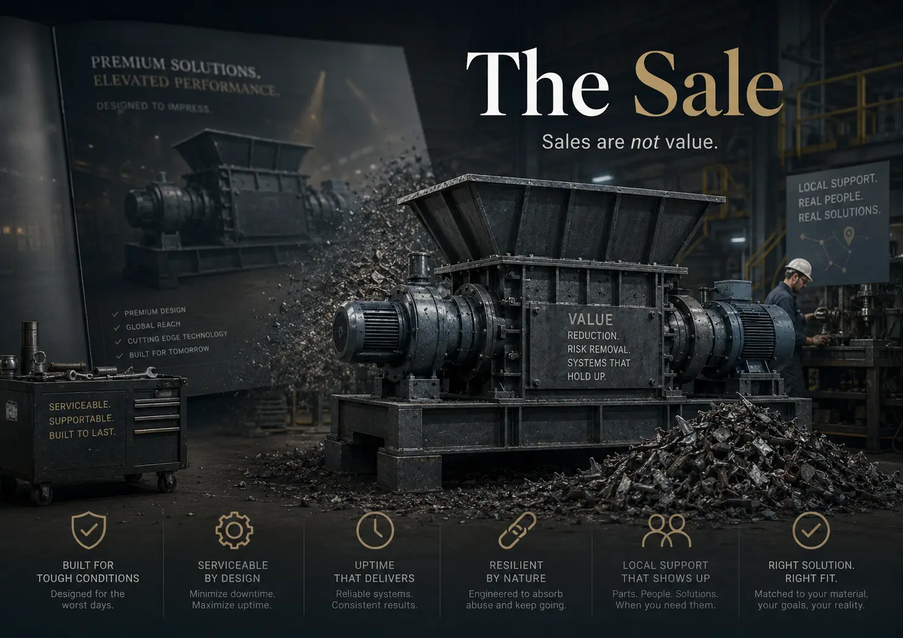

Another man’s search for meaning
Value is rarely located where an organisation’s easiest metric says it is.
One of the more reliable ways to test the patience of anyone who has ever worked with me is to answer any question they might have with the inclusion of one word: value.
I do not blame them. I too am tired of hearing myself say it, but language has built a cage around the truth of my meaning. Profit and sales are too narrow; impact and outcomes are too broad. Value remains the least inadequate word for the most important concept of my life, but it hides beneath problems, wearing masks fashioned from the skins of its imitators.
In business, one of those masks is sales; in law enforcement, arrests; in education, grades. These things are not meaningless. Institutions need to measure activity and outcomes. But these are the sorts of metrics that systems track while gradually losing focus on the very thing they were designed to cultivate.
Only years later did I begin to realise that my frustrations with performative deliverables, lazy mental models and empty sales jargon were not independent issues. They came from a deeper dissonance: illusory exactitude. The inaccuracy of these masks, and their eager adoption, stood in aggravating contrast to the authentic value I could sense just beneath the surface.
Three different worlds. Three respectable measures. One recurring error: mistaking the proxy for the purpose.
01 Students
Grading
models
The ERD looked like database design. In practice, it exposed the quality of a student’s thinking.
Over a decade ago, as a young lecturer at UCT, I taught business analysis to postgraduate students. Tucked inside a vast array of frameworks and diagrams was the humble Entity Relationship Diagram, the ERD. On the surface it is a map of a system’s data—a blueprint of what the system needs to know. But the diagram was never really the diagram.
Despite its modest curricular footprint, I frequently spent hours with students dissecting and redesigning their models, crossing out lines and forcing them to defend the structural assumptions they had smuggled in without noticing. A small number came to relish the process. They had begun to realise that the diagram was exposing the quality of their thinking.
An enthused, over-caffeinated mind would arrive early, keen to debate what a policy meant to a client, what it meant to the business, and whether a call-centre interaction was merely a request for information or a search for trust. If the model could not answer those questions, it had not understood the business; it had only drawn its paperwork.
Grades are the official fiction of education; they satisfy the spreadsheet. But grades are no guarantee of authentic business value. True value relies on whether the student has learned to pierce the surface of a problem—less impressed by neatness, more interested in truth.
“The model was not the answer. It was a surface on which hidden assumptions became visible.”
Proxy 01 — Grades ≠ capability

02 Syndicates
Saving rhinos or
shooting poachers?
The visible actor was not always the important lever. The network changed when the flow changed.
Later, I worked in the intelligence space, partnering with NGOs and law-enforcement agencies in the fight against international wildlife crime. The work focused on understanding complex transnational criminal networks. The popular model was a pyramid: poachers at the bottom, kingpins in the middle and buyers at the top. It was dramatic and emotionally satisfying. It was also a poor representation of the reality we were seeing.
The structure behaved more like a horizontal value chain. Horn moved one way; money moved the other. Between them was a web of poachers, handlers, transporters, buyers, corrupt enablers, weapons, access, protection and opportunity. Once we mapped the chain properly, the question changed. It was no longer, “Who looks most criminal?” It was, “Where does intervention actually change the system?”
That distinction mattered. A small number of people or nodes could influence a large volume of movement. Disrupting those points did more than add another statistic to a report: it changed the economics and logistics of the chain, made routes harder to use and reduced the system’s ability to move product and money.
The obvious measure of value is activity: arrests, seizures, convictions. These outputs photograph well and make the machine look busy. But action at the bottom of a chain can simply remove its most replaceable participant while the actual flow continues.
The better question was colder and more useful: where is the lever? Fewer arrests can be a better outcome if the interventions you do make alter the system. That looks like failure if you are counting the wrong thing; it looks like intelligence if you are not.
“Activity can rise while the underlying system remains untouched.”
Proxy 02 — Arrests ≠ disruption

03 Shredders
Sales, sales,
sales
The product was not a luxury car. Its real promise was resilience, repairability and reduced anxiety.
Later, a company I worked with manufactured industrial shredders—heavy, dual-shaft machines built to tear uncompromising materials apart. An executive once described the product as the “Mercedes-Benz S-Class” of shredders. It was potent sales perfume, but it pointed the enterprise toward an illusion of identity.
European competitors already owned that narrative: complex, expensive machines optimised for European infrastructure, predictable logistics and controlled conditions. Ours were overbuilt, robust and fiercely effective; practical and repairable in rugged markets where distant alternatives were too fragile or too expensive. We were not the Mercedes-Benz S-Class. We were the Toyota Hilux.
Once that value was named, the strategic fog lifted. The value delivered to the operator was uptime, resilience, local support, raw mechanical strength and confidence that the machine would still perform long after the brochure had outlived its utility. Ultimately, we provided anxiety reduction.
An obsession with top-line growth can quietly cannibalise the value being traded. True value meant aligning the customer with the correct machine, safeguarding the operational promise, offering proactive service and strengthening local support. Volume mattered—but only if it grew from the right value proposition. Otherwise, you are not building a market; you are feeding a future problem.
Interactive synthesis
Move beyond the
proxy mask.
Select each world to see how the measure, the actual value and the better diagnostic question diverge.
Can the person see beneath the approved vocabulary and model what is really happening?
Better questions, defensible assumptions and thinking that survives challenge.
04 / Proxy masks
A system can be intelligent, energetic and beautifully presented—while asking precise questions of the wrong reality.
Looking back, the pattern is clear: students, syndicates and shredders; grades, arrests and sales. The danger of a proxy is that it is not entirely illogical. It gives an organisation something quantifiable and enough mechanical momentum to keep moving. The problems begin when the proxy becomes more real than the truth it was meant to represent.
The real value usually sits in shifting relationships: between a policy and a client’s fear; a poacher and a buyer’s money; a machine and the operator on the ground. Value does not sit still. It changes with context, risk and trust.
So what really matters? It is not what is easiest to count, easiest to communicate or most impressive to an audience. Those are convenient starting points. What really matters is, annoyingly, value.
Visual development
Artwork from the
thinking process.
The essay developed alongside a visual language of masks, maps, machinery and connected systems. These conceptual illustrations are part of the argument—not decoration.